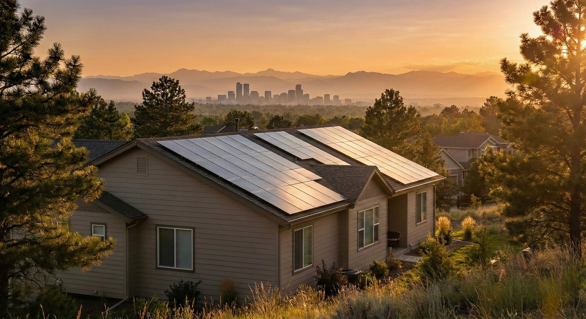

Denver Solar Panel Cleaning
Solar Panel Cleaning in Denver, CO
Panel-safe pure-water cleaning for dust, pollen, and bird debris on Denver solar arrays. We document visible conditions and provide before and after photos.
Panel-Safe Cleaning
Pure-water cleaning removes dust, pollen, droppings, and mineral buildup without harsh detergents or abrasive methods.
Critter Guard Service
We install and maintain panel-safe guard systems that help keep birds and nesting debris out from under your array.
Clear Follow-Up
Every quote request is reviewed for address, panel count, service type, timing, and roof access before pricing is confirmed.
Denver neighborhoods we serve
Mile High Solar Care serves Denver neighborhoods including Central Park, Green Valley Ranch, Park Hill, Washington Park, Highlands, Sloan's Lake, Lowry, Montbello, and surrounding Denver Metro communities.
Denver solar arrays deal with dust, pollen, snowmelt residue, bird activity, and seasonal debris. Regular cleaning and inspection help your system stay productive during Colorado's strongest sun months.
Get a Denver solar service quote
Use the main quote form and include your Denver address or nearest cross streets, approximate panel count, and whether you need cleaning, critter guard, or both.
Start My QuoteSolar Panel Maintenance
More than a one-time wash
Denver solar panel maintenance includes the visible, serviceable work that helps keep a system easier to inspect and care for: panel-safe cleaning, roofline debris notes, critter guard checks, and before/after photo documentation.
We do not perform electrical repair or warranty determinations. When we see something outside our scope, we document the visible concern and recommend the right next step instead of guessing.
This is especially useful after spring storms, nesting season, heavy pollen, wildfire smoke, snowmelt residue, or long dry stretches across Denver and the Front Range.
For the full service scope, see our solar panel maintenance service.
Maintenance quote inputs
- Service address or nearest cross streets.
- Approximate panel count and roof access notes.
- Whether you need cleaning, critter guard, or both.
- Any bird activity, debris, storm residue, or production concern.
Related solar services in Denver
Seeing birds around your array? Read our Denver critter guard guide before requesting a quote.
Denver solar maintenance questions
How often should solar panels be cleaned in Denver?
Most systems should be checked seasonally and cleaned when dust, pollen, bird droppings, wildfire smoke residue, or roofline debris are visible. Flat or low-slope arrays may need attention more often.
Does rain clean solar panels?
Rain can rinse loose dust, but it usually does not remove sticky pollen, mineral spots, bird droppings, nesting debris, or residue that collects near the lower edge of panels.
Can you check critter guard during cleaning?
Yes. If critter guard is installed, we can look for visible loose sections, nesting debris, or buildup around the array and document what we can safely see.
Do you provide before and after photos?
Yes. Photo proof is part of the maintenance value: it helps show the cleaning result and creates a clearer record of visible roofline or panel-area concerns.